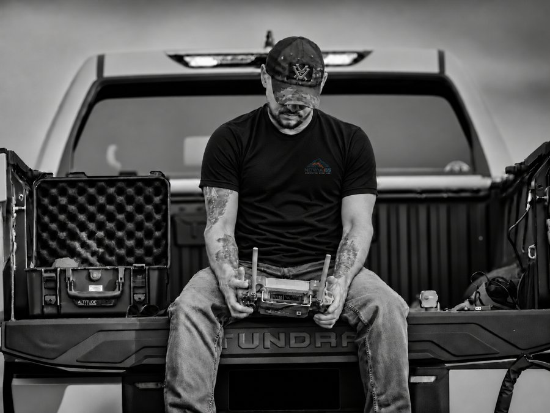
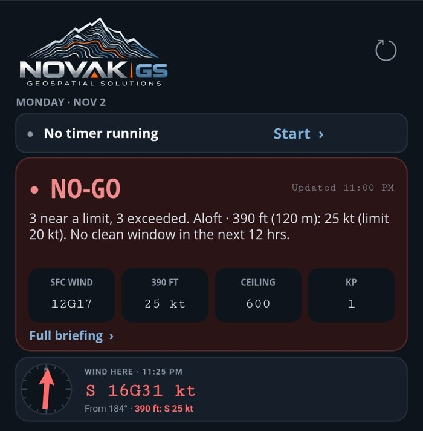
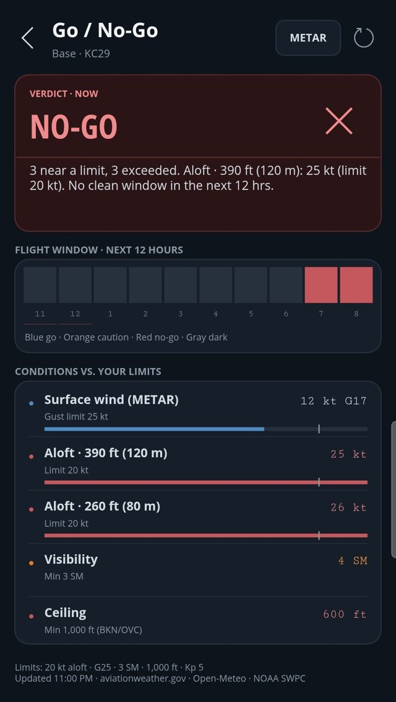

Field notes ·
Who's Flying That Drone? What Commercial Drone Work Really Involves

Spot a drone working in your area and it's natural to have questions. Who's flying it? What's it recording? Is that even allowed?
Those are fair questions. Drones are still new enough that people aren't always sure what they're looking at, and it's easy to assume anyone can buy one and fly wherever they please.
Commercial drone work is a lot less mysterious, and a lot more regulated, than it might look from the ground.
Yes, it's "a thing"
The person at the controls isn't just out there winging it. Commercial drone pilots need an FAA Remote Pilot Certificate, and first-time pilots have to pass a knowledge test to get one. It covers things like airspace, weather, and emergency procedures. Most professional operators carry insurance, too.
The certificate doesn't stay in a drawer at home, either. A Part 107 pilot has to have it and identification on hand while flying and present them on request to the FAA, the NTSB, the TSA, or any federal, state, or local law enforcement officer.
A quick note for our friends in law enforcement: Yes, you can ask to see a Part 107 pilot's certificate and ID, and the pilot has to show them. You can also ask to see the drone's registration. If you run into a possible violation, the FAA's Law Enforcement Assistance Program (LEAP) is your point of contact, and the FAA also has a form for submitting drone violation referrals.
The drone isn't anonymous
Our aircraft is registered with the FAA and broadcasts Remote ID during flight. Think of it as a digital license plate. It shares identification and location information that can help the FAA and law enforcement locate the operator if there's a concern.
We also keep our flight logs and routes. If a question comes up later about where a job flew, there's a record to check.
We check before we fly
The sky has rules of the road, too. Near airports, for example, we generally need FAA authorization before takeoff. That's often handled through LAANC, a system that lets us request approval for a specific area, altitude, and time through an FAA-approved app.
Wisconsin has its own limits, too, so we look at what's around a site well before the drone comes out of the case:
- Schools: No flying over school property during the school day, or during a school-approved event.
- Correctional facilities: No flying over a prison, jail, or its grounds without authorization.
- Utility sites: Drones are restricted below 300 feet over, or within 500 feet of, parcels with certain facilities, like power plants and substations. There are exceptions, including FAA-compliant commercial flights, but we still plan around them.
- State land: The Wisconsin DNR restricts drones on most of the property it manages, including most state parks.
We're also part-time weathermen
Drone pilots get a little obsessive about the forecast. Wind, visibility, and cloud height can all decide whether we fly, so one of our first stops is the METAR.
A METAR is a routine weather report from an airport, written in pilot shorthand. It tells us what conditions are like right now. Here's an example of one for Madison's airport:
METAR KMSN 021553Z 28012G18KT 10SM FEW035 BKN050 08/02 A3002 RMK AO2 PK WND 29027/1532 SLP170 T00830022
It looks like someone fell asleep on the keyboard. Translated, it says:
At 9:53 a.m. in Madison, the wind was out of the west at about 14 mph, with gusts around 21. The strongest gust in the past hour hit about 31 mph at 9:32. You could see for 10 miles. There were a few clouds at 3,500 feet and more at 5,000. It was about 47 degrees, and the air pressure was normal for a fall morning.
Then there's the TAF, or Terminal Aerodrome Forecast. If a METAR is what's happening now, a TAF is what's expected to happen around that airport over the coming hours. Here's a sample:
TAF KMSN 021120Z 0212/0312 28010KT P6SM SCT040 FM021700 30015G25KT P6SM BKN035 TEMPO 0218/0222 5SM -SHRA BKN025 FM030100 31008KT P6SM SCT050
In plain English:
Starting at 6 a.m., expect a west wind around 12 mph, good visibility, and scattered clouds. By 11 a.m., the wind picks up to about 17 mph, with gusts near 29. From noon to 4 p.m., expect some periods of light rain, 5-mile visibility, and lower clouds at 2,500 feet. By 7 p.m., the wind settles to about 9 mph and the clouds start to break up.
Put those together, and we have a pretty good idea of how the day is shaping up. For most people, that's a decent day for a jacket. For us, it may mean flying early or moving the job to another day.

We don't leave that call to squinting at codes in a parking lot, either. We built our own app that pulls the weather data into one place and checks it against our flight limits, then gives us a straight answer: go or no-go.

Here's a real example from a windy November night. Surface winds of 12 knots, gusting to 17, were within our gust limit. But the wind at 390 feet was 25 knots against our 20-knot limit, and the cloud ceiling was 600 feet against our 1,000-foot minimum. Standing on the ground, you might not realize how different things are up there.
The verdict was a clear no-go, with no clean window in the next 12 hours. Nobody had to talk themselves into anything. The job waits for a better day.
So what's the camera doing?
This is usually the real question, and it's a good one.
On a mapping job, we're collecting overlapping photos of a defined site, usually along a planned route. Those photos become the maps and measurements our clients need. We aren't there to follow people or look in anyone's windows, and Wisconsin law has real consequences for anyone who uses a drone to spy on someone.
Most of the time, the job is about as exciting as it sounds: a stockpile, a construction site, or a field, and a lot of careful data collection.
See us out there? Ask.
We'd rather answer a question than leave you wondering. Wave us down if it's safe, or reach out at info@novakgs.com.